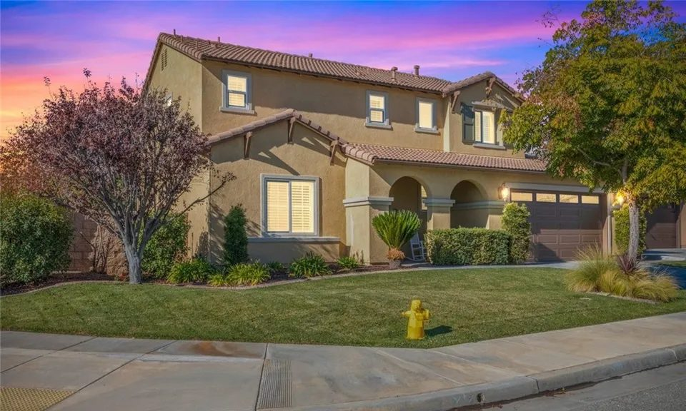
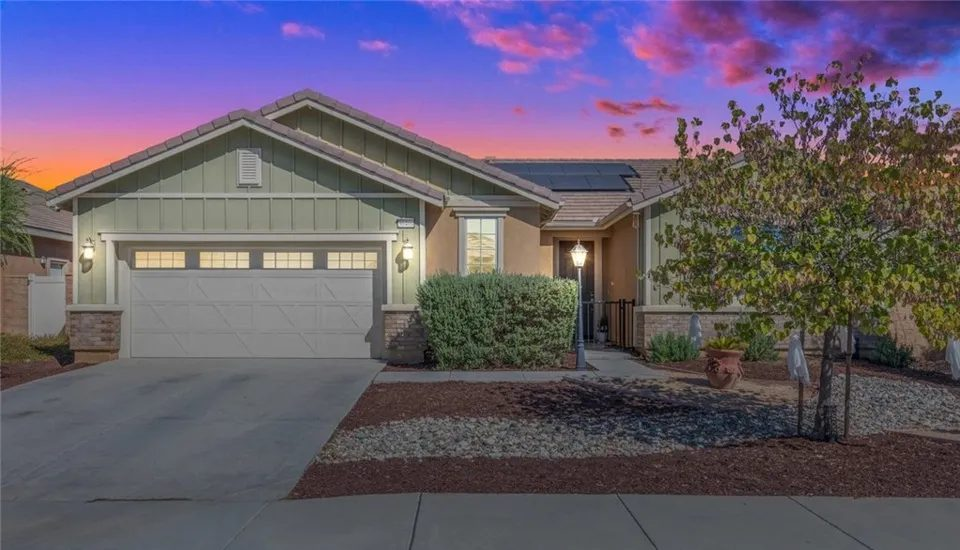
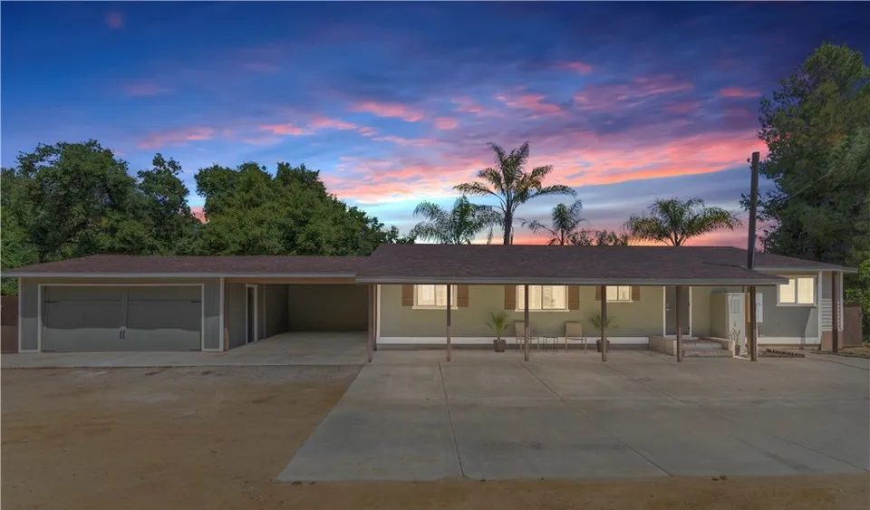
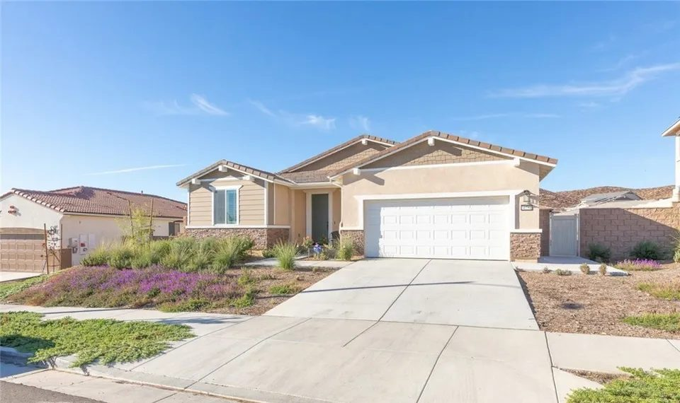
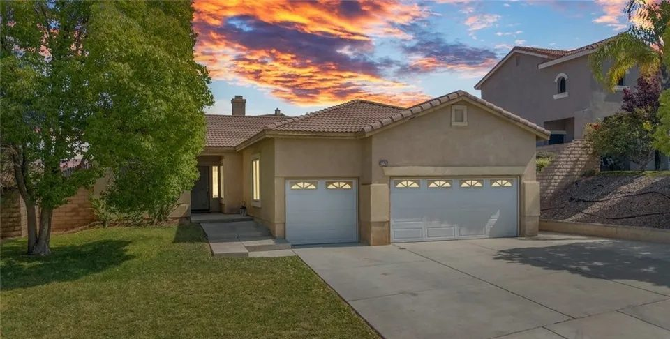
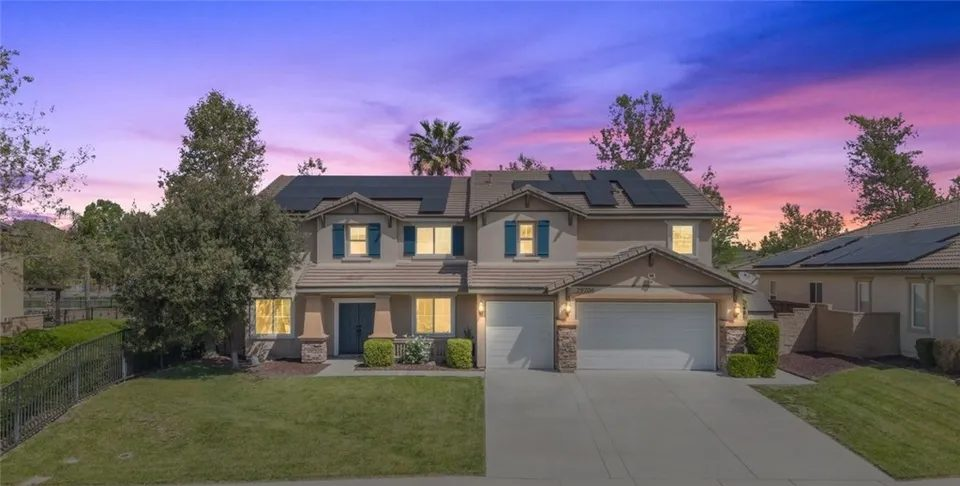
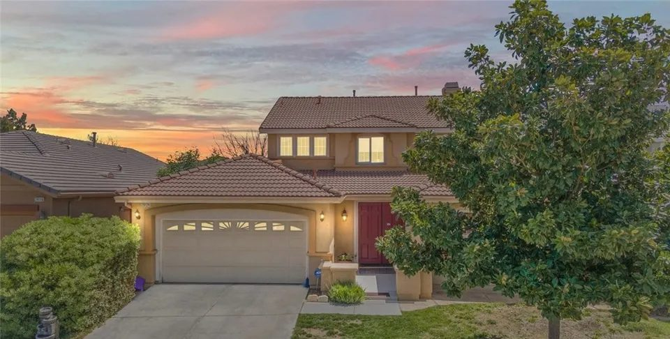
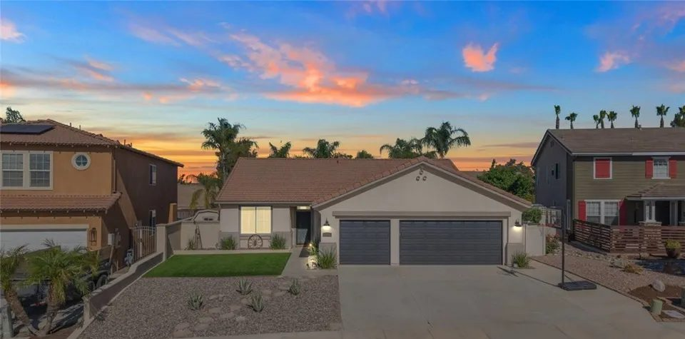

01

Menifee, Riverside County
Homes from Sun City and Menifee Lakes to the rural lots south of Garbani Road, with saved searches and what Jim checks before you write an offer.
Menifee at a glance
Menifee sits in southwestern Riverside County, about 30 miles southeast of Riverside, with Interstate 215 running north to south through the middle. Voters chose cityhood on June 3, 2008, and Menifee became Riverside County's 26th city on October 1, 2008.
The new city took in places that already had names and histories: Sun City, Quail Valley and part of Romoland, with Menifee Lakes and the planned communities that followed. Salt Creek and the freeway split most of its neighborhoods into four village areas, and south of Garbani Road the land turns rural.
Saved searches
Each card opens a live search of MLS listings, updated as they change.

01

02

03

04
<!-- IDX_ZONE: homes-for-sale-menifee-ca-feed -->
The newest Menifee listings in one compact row, six to eight homes. Builder places the Showcase hotsheet shortcode here in its compact layout.

In 1883 a prospector named Luther Menifee Wilson found a gold-bearing quartz ledge near today's Holland and Murrieta roads and filed a claim for his Menifee mine with the San Diego County Recorder. Government survey maps soon marked a Menifee Mining District, and the area became known as the Menifee Valley.
Farm roads were laid out on section lines, a mile apart, and named for settlers who owned land along them: Newport for William Newport, whose 2,000 acres of wheat lay between today's Newport Road and Sun City, and McCall, Evans and Wickerd among others. The City's history of Menifee roads tells the stories behind the names.
The Menifee Valley changed little until about 1957. Del Webb, who had just opened a Sun City in Arizona, bought 14,000 acres between Scott Road and Ethanac, began grading in December 1961 and opened Sun City in June 1962, with its civic center and model homes in place and the golf course seeded.
Sun City sits west of Interstate 215 and north of Salt Creek, near the middle of today's city, and other kinds of housing have been built there since. The General Plan names Sun City among the established communities it sets out to preserve.
Growth picked up again in 1989 with Menifee Lakes, a master-planned community. The larger planned areas each have a Specific Plan that sets what can be built there, and many were approved before cityhood: Audie Murphy Ranch, Cimarron Ridge, Menifee Valley Ranch, Rockport Ranch and Legado are on the City's list of Specific Plans.
Salt Creek crosses the city from east to west, channeled through the built-up areas and natural again as it flows west toward Canyon Lake. Some neighborhoods also pay into one of the City's special districts: Community Facilities Districts, known as Mello-Roos, or lighting and landscape districts. Their charges are on the county property tax bill.
South of Garbani Road the land is rural, with homes on lots generally an acre or larger among hillsides and rock outcroppings. The General Plan names Bell Mountain and Quail Hill among the landforms that give Menifee its shape.
Quail Valley, in the northwest, began as a 3,000-acre preserve for hunting quail, rabbits and doves, bought in 1891 by Charles Cooper and a group of Los Angeles bankers; it became the Quail Valley Country Club in 1947, and the City now calls it a semi-rural residential community. Romoland, in the northeast, started in 1924 as Romola Farms, ranches of four or five acres planted with fig trees.

Day to day
School information is factual and by district. Always confirm a specific address in the district's school finder.
Sold by Jim
A few of the Menifee homes he has sold for their owners.

Tate Road

Newmarket Drive

Meandering Circle

Mesa View Drive
Questions
Three. Menifee Union School District and Romoland School District run the elementary and middle schools, depending on the address, and Perris Union High School District runs the high schools. The City lists all three on its school district page.
Yes. Sun City, Quail Valley and part of Romoland became part of the City of Menifee when it incorporated on October 1, 2008. Sun City itself dates from 1962.
The City administers Community Facilities Districts, known as Mello-Roos, lighting, landscape and maintenance districts, and community service areas. Owners inside one see its charge on the county property tax bill.
By road from City Hall, downtown Riverside is about 27 miles north on Interstate 215 and downtown San Diego about 72 miles south. Ontario International is about 41 miles away and Old Town Temecula about 14.
Nearby


Resources
Contact
Tell Jim the neighborhoods on your list. He will tell you what he knows about each one, and what he would check, before you spend a weekend driving them.